AI Academy · Level 1 · Grade 6 · Week 24 · Student lesson
Privacy by Choosing Less
Learn to understand, design, build, test and explain AI systems responsibly.
Project: Helpful Classroom Sorter
Before you start
Week 19: preferences can be represented by selected book traits.
Plan time to read, investigate and explain. Keep predictions separate from observations.
Student lesson · 1 of 14
Your mission
Your learning target
I can justify which information a stated task needs and remove unnecessary fields.
I can distinguish reducing personal data from hiding a name.
I can design a simple access, retention and deletion plan for a classroom activity.
Remember before reading
Close your notes first. A rough first answer helps us choose the right starting point; it is not a score for your ability.
Without opening the old lesson, explain one key idea from Fair for Whom?. Give an example and a mistake that the idea helps you avoid.
Without opening the old lesson, explain one key idea from Good Data, Bad Data. Give an example and a mistake that the idea helps you avoid.
Without opening the old lesson, explain one key idea from Confidence Is Not Correctness. Give an example and a mistake that the idea helps you avoid.
After trying, check the relevant lesson or ask your teacher. Change the part of your explanation that the evidence shows was wrong.
A useful system should collect only information it truly needs.
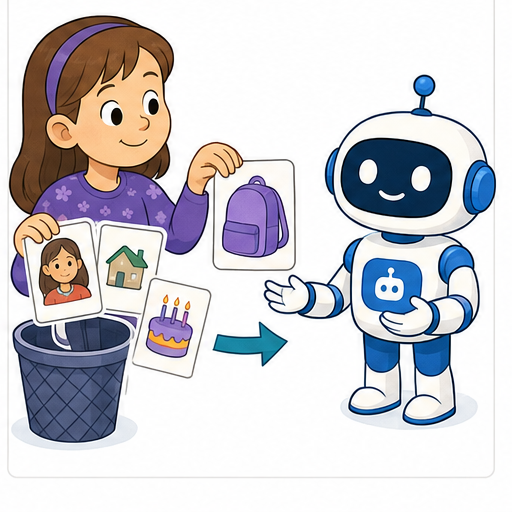
Learner name:
Readiness for the connected explanation
A report needs the number of correct answers out of 20 fictional test cards. Does that calculation require a student’s name or home address? Explain.
This week’s end goal
By the end, I can collect only information necessary for a stated task and explain coded-record limits.
Student lesson · 2 of 14
Notice the evidence
PICTURE STORY
Look Closely Before You Explain
Pictures give clues; evidence tells us what the clues mean.

What do you notice?
Name three visible details without explaining them yet.
Circle the detail most connected to the system's decision.
Name one detail that may be decoration or distraction.
Make a first prediction and state the clue that supports it.
My observations, prediction, and evidence:
A closer explanation
Privacy includes having appropriate boundaries around information about people. A useful first question is: what exact job are we trying to do? A second is: what is the least information that can do that job? Collecting extra details just because a form has room for them creates more information to protect.
Our fictional class wants to choose one of three workshop topics for Friday: drawing, music or coding. It needs a total for each topic, not a list of who chose what. Each fictional pupil gets one paper slip and marks one topic. No real class survey is needed for this lesson. The teacher counts the choices and uses the largest total; a tie goes to a class discussion.
A proposed form asks for name, full date of birth, home address, photograph and topic choice. For the stated counting task only the topic choice is needed. Remove the other fields before collection. Do not fill them in and promise to ignore them later. If the purpose changes to individual attendance, design and justify that separate task with the teacher rather than silently reusing the survey.
Student lesson · 3 of 14
See how it works
VISUAL MECHANISM
Input → Process → Output
Follow the information instead of imagining magic inside the machine.
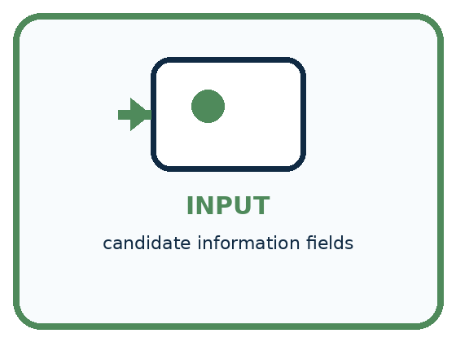
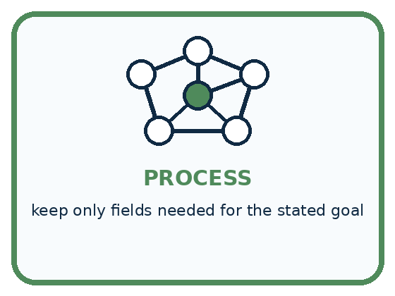
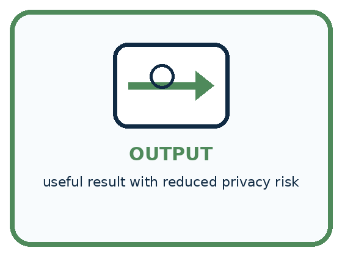
INPUT candidate information fields
PROCESS keep only fields needed for the stated goal
OUTPUT useful result with reduced privacy risk
Draw a fresh example with all three stages:
A closer explanation
A small information plan for a fictional vote
Suppose the fictional counts are drawing 8, music 7 and coding 5. These totals support the choice of drawing. There is no need to publish each slip or a photograph of a child holding it. The teacher checks the total of 20 against the number of slips and then follows the agreed school process for disposing of the slips after verification.
A retention plan needs a clear trigger and a responsible person: for example, the teacher disposes of the fictional vote slips after the totals are checked and the activity closes. Real classroom records must follow the school’s approved process. Deleting one visible copy does not prove that every backup, screenshot or previously shared copy is gone.
Connect the picture and the explanation
Point to the input, the deciding step and the result in this week’s visual. Explain the same step in ordinary words. A picture helps when you can say what each part represents.
Student lesson · 4 of 14
Compare the cases
PICTURE GALLERY
Four Cases, Four Clues
Use the visual cue, then read the evidence carefully.
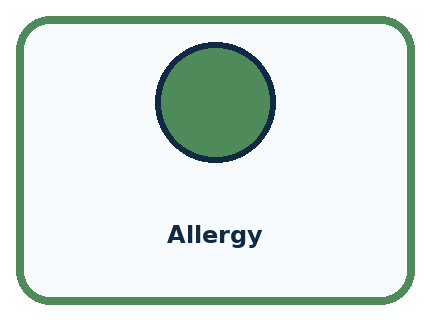
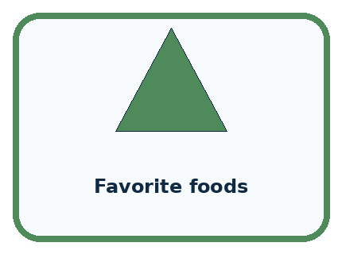
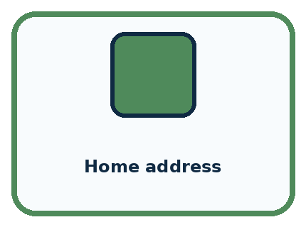
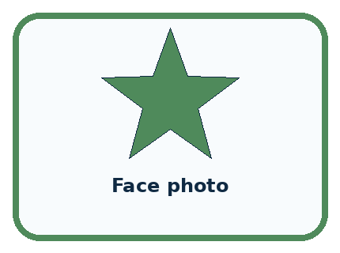
CASE 1 — Allergy Clue: needed for safe lunch filter. Meaning: relevant sensitive data.
CASE 2 — Favorite foods Clue: useful for preference. Meaning: optional relevant data.
CASE 3 — Home address Clue: not needed. Meaning: remove.
CASE 4 — Face photo Clue: not needed for menu choice. Meaning: remove.
Which two pictures are easiest to confuse? What evidence separates them?
Change one thing in the pictured case
Change: The teacher adds an authorised task to return one repaired tool to its borrower.
Prediction: A minimal contact mechanism may now be needed for that tool.
Reason: The purpose changed; reassess necessity rather than restoring every old field.
Student lesson · 5 of 14
Words that unlock the idea
VOCABULARY
Words You Can See and Use
The badge is a memory cue; the definition does the real thinking work.
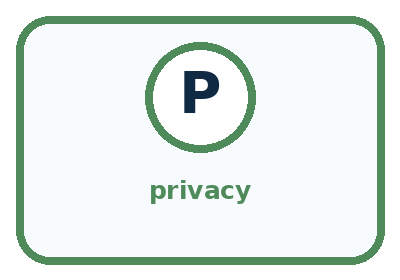
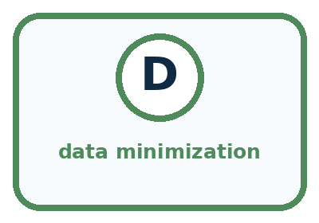
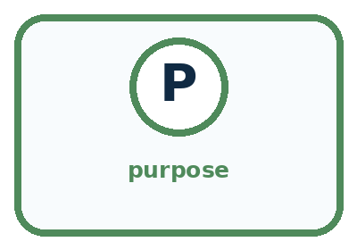
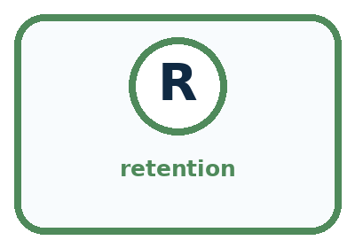
| Word | Meaning | My example |
|---|---|---|
| privacy | control and protection of information about people | |
| data minimization | collecting only what the purpose requires | |
| purpose | specific reason information is used | |
| retention | how long information is kept |
Misconception detective
CLAIM TO REPAIR Collect data now in case it becomes useful later.
Use one vocabulary word and one piece of evidence to repair it:
Words used in the closer explanation
| Word | Meaning |
|---|---|
| Personal data | Information about an identifiable person, including combinations that can identify someone |
| Data minimisation | Using only the information needed for a stated purpose |
| Access control | A rule and mechanism deciding who can see or use information |
Student lesson · 6 of 14
Follow a worked example
WORKED EXAMPLE
Watch the Reasoning, Not Just the Answer
Every step connects a claim to observable evidence.

STEP 1 — OBSERVE candidate information fields
STEP 2 — TRACE keep only fields needed for the stated goal
STEP 3 — CONCLUDE useful result with reduced privacy risk
What new evidence could change this answer?
A closer explanation
| Proposed change | What it changes | What still needs thought |
|---|---|---|
| Replace a name with P07 | Hides the name on this sheet | A separate key can reconnect the code |
| Remove names but keep photos | Removes one identifying field | Faces may still identify people |
| Share topic totals only | Removes individual rows | Small or unusual groups may still reveal a choice |
A code is not a promise of anonymity. If a teacher keeps a key connecting P07 to a pupil, the coded record can still be linked to that pupil. Even without a key, a combination such as an exact birthday, a team and a photograph may identify someone. Ask whether a reader could connect the information to a person, not just whether the name column is blank.
Totals also need context. A report saying that the only member of a tiny club chose music reveals that member’s choice. Our whole-class topic totals reveal less detail than individual rows, but we should not describe every possible total as automatically anonymous. Share only what the audience needs for the purpose.
Learn from the worked case
Cover the result before checking it. Say what is given, choose the procedure, and follow one step at a time. Then uncover the result and explain your first mismatch. Ask why a step is allowed, not only what number it produces.
A pictorial worked case: Privacy by Choosing Less
A fictional teacher wants to count broken craft tools by type, without contacting borrowers.
The facts we will use
Needed output: totals for scissors, ruler and hole-punch repairs.
Draft form requests pupil name, birthday, tool type and repair-needed Yes/No. No borrower follow-up is required.
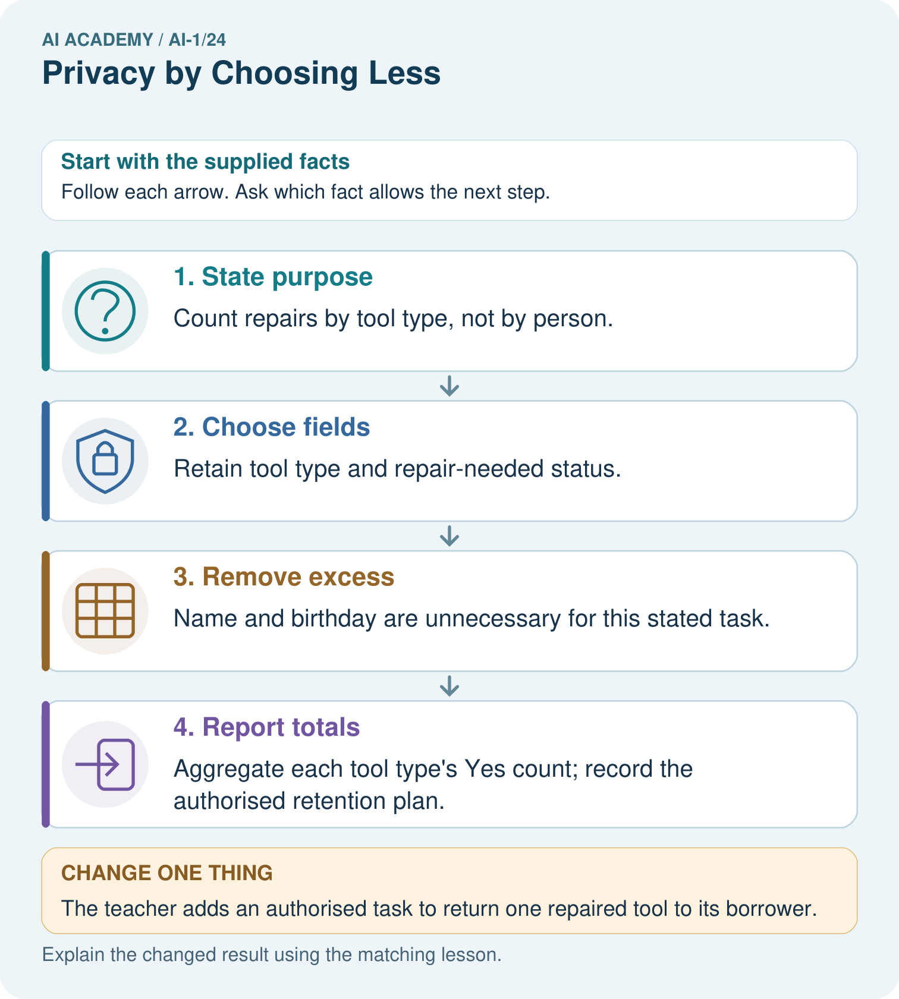
Read the picture one step at a time
Why this result follows
A field is justified by what the task needs to do, not by whether it might become useful someday. Names and birthdays do not help these repair totals. Replacing names with codes still leaves linked personal records if someone keeps a name-code key; collecting less can remove the need for that link entirely.
What this example does not establish
Removing these fields is not a universal guarantee of anonymity or permission to collect other identifying combinations.
Student lesson · 7 of 14
Find and repair a mistake
COMPARE
Same Result, Different Reason
A comparison helps reveal the true concept boundary.
| Case | Evidence | What it shows |
|---|---|---|
| Allergy | needed for safe lunch filter | relevant sensitive data |
| Favorite foods | useful for preference | optional relevant data |
| Home address | not needed | remove |
| Face photo | not needed for menu choice | remove |
Repair two tempting claims
CLAIM A Collect data now in case it becomes useful later.
Repair:
CLAIM B Removing names makes all data anonymous and safe.
Repair:
A closer explanation
A useful data plan answers five questions: what is the purpose; which fields are necessary; who needs access; what result will be shared; and when will the source information be disposed of under the agreed process? It also names who is responsible. “Keep everything safe forever” answers neither the collection question nor the retention question.
If you accidentally share personal information, stop sharing it and tell the teacher or another trusted adult promptly. Do not repost it to ask classmates for help. An adult can follow the school’s process and decide what action is appropriate. Avoid promising that deleting a message has removed every copy.
Student lesson · 8 of 14
Practise together
GUIDED PRACTICE
Try It, Check It, Explain It
Use support now so you can succeed independently later.

Explain how the picture story demonstrates this idea: A useful system should collect only information it truly needs.
Use a fresh example to explain privacy.
Trace a new input → process → output example.
Find and repair the error in: Removing names makes all data anonymous and safe.
Invent one edge case and name the safe response.
A closer explanation
An AI tool is another place where information may be sent. Before using it for schoolwork, follow the teacher’s approved tool and data rules. Do not paste real names, contact details, photos, passwords or private messages into an unapproved service. For this lesson, use the provided fictional counts or work entirely on paper. An AI tool is not needed to add 8 + 7 + 5.
A student may need the lesson and their own work; a teacher may need restricted teaching records. Access should match these jobs. A hidden link or a hard-to-guess filename is not a substitute for an access check. When information is shared more widely, it may be copied beyond the original audience. Decide the audience before sharing.
Practise with less help: Challenge a claim of anonymity
Use workbook W2 for the connected example “Privacy and data minimisation”. First fill the input and rule boxes. Try the middle steps before asking for a hint. After a hint, try the next step yourself.
| Plan | Do | Check |
|---|---|---|
| What is given? Which rule or procedure applies? | Record each intermediate step. | Does the result follow? What remains unknown? |
Explain your trace to a partner. Your partner points to one step to check. Swap roles on the next case. Each person writes their own explanation.
Check your reasoning
Use the worked case for Privacy and data minimisation. Proposed explanation: “More data always improves a task”. Decide whether this explanation is supported. Point to the step or supplied fact that decides; explain your repair if needed.
Answer on your own before discussion. If you are unsure, say which step you need help with.
Explain the picture
For the original task, does adding an anonymous-looking pupil code improve the repair count?
This is supported practice. Keep the separately named independent case for an attempt before feedback.
Student lesson · 9 of 14
Run the investigation
EXPLORER LAB
Too-Much-Data Redesign
Predict first, test honestly, and explain what the evidence means.

State your prediction before the result is known.
Complete the task: Redesign a lunch helper that asks for too much personal data.
Keep a normal case and an edge case clearly separated.
Record what happened—even when it does not match your prediction.
Explain the result, one limitation, and the next useful test.
| Case | Prediction | Observed result | What it means |
|---|---|---|---|
| Normal | |||
| Edge |
Plan → try → check
Before trying: what do I expect, and why? While trying: which step could first go wrong? Afterwards: what did I actually observe, and what should change? Keep “not run” if you only traced the procedure.
Student lesson · 10 of 14
Build your understanding
PRACTICE LADDER
Climb from Recall to Defense
Each step asks for a stronger kind of understanding.

RECALL Define privacy.
EXPLAIN A useful system should collect only information it truly needs.
TRACE Show the input, process, and output.
DIAGNOSE Repair: Collect data now in case it becomes useful later.
TRANSFER Apply the idea to a new home or classroom case.
CREATE Design one revealing test.
DEFEND Give a claim, evidence, mechanism, limit, and safe action.
Student lesson · 11 of 14
Connect your project
PROJECT
Helpful Classroom Sorter
Build one coherent system across the year, one evidence-based decision at a time.

What real classroom need does this serve?
What information is necessary—and what should stay private?
What happens inside the process?
What normal and edge cases will you test?
When should it say not sure or ask a person?

My project decision:
Evidence for your project
Write the sorter’s purpose, necessary fields, access rules and deletion point before collecting any real classroom information.
Student lesson · 12 of 14
Show what you know
MASTERY
Fresh-Case Independent Proof
Complete this after teaching and guided practice have ended.

□ Name or draw the fresh case.
□ Trace input, process, and output.
□ State the conclusion and strongest evidence.
□ Name one limit, failure, missing clue, or fairness/privacy concern.
□ Explain one safe next action or improvement.
Independent evidence:
My level: □ Not yet □ With one hint □ Independently □ I can teach it
Student lesson · 13 of 14
Study a complete case
Week 24 Worked case
Use the supplied details to practise the weekly concept before attempting the independent question. This case extends the illustrated lesson.
The situation
A genre-based book helper asks for genre, home address and a photograph.
The question
Which fields are necessary?
Worked explanation
Genre is relevant; address and photo are unnecessary for the stated task. Collecting less reduces exposure.
Explain it in your own words
Which detail supports the answer, and why does it matter?
Trace the supplied case visually
Collect only what the book task needs
| Evidence or stage | Value or result |
|---|---|
| Genre | Useful for genre matching |
| Home address | Not needed for this task |
| Photograph | Not needed for this task |
A genre-based book helper asks for genre, home address and a photograph.
Which fields are necessary?
Genre is relevant; address and photo are unnecessary for the stated task. Collecting less reduces exposure.
Student lesson · 14 of 14
Try a new case independently
Independent case: Design a different minimal-data task
A fictional library wants only the total number of books needing repair in each category: cover, page or binding. It does not need to contact borrowers. A draft repair sheet asks for borrower name, home address, book repair category and borrower photograph. Design a plan: state the purpose, required and removed fields, who handles source sheets, what totals are shared with the librarian, and who disposes of sheets at what agreed point. Use no real borrower details.
Attempt this case before feedback. Record any help. Earlier examples below are further practice; a case already practised with feedback cannot establish fresh transfer.
Week 24 Independent application
Close the worked explanation. Apply the idea to this different question without copying.
A book helper needs reading topic and approximate difficulty. Someone asks it to collect home address too. Which information can be left out, and why?
My answer, with a trace, calculation or supporting evidence
Create and test
Change one relevant detail. Predict the result before testing. Include a boundary or missing-information case when it helps reveal a limit.
My changed input and expected result
Connect to your project
Cross out names, faces, and ownership details unless an explicit need survives review; set a deletion rule for sorter records.
The evidence I will keep
Your teacher has the independent answer and scoring criteria. Complete the matching workbook week to keep your practice evidence together.
Transfer practice from the original programme
A book recommender requests genre, maximum pages, home address and a selfie. Keep only fields needed for genre and length matching. Explain one consequence of storing extra fields.
Use feedback to improve
Attempt the independent case before hints. Record whether you worked alone, used a hint or followed a model. After feedback, fix the first unsupported step and explain why it changed. A later check uses a changed case, not a copied answer.